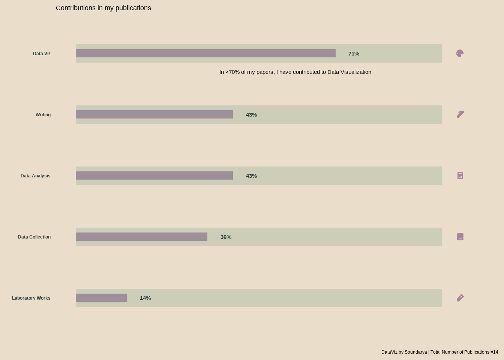

Publications
List of Publications
- Services for Enhanced Recovery with Intensive and Continued Engagement (SERWICE): An Outpatient Psychiatric Rehabilitation Model from India (Sivakumar et al. 2014).
- Vitamin B12 Deficiency: An Important Reversible Co-Morbidity in Neuropsychiatric Manifestations. (Issac et al. 2015)
This is my most-cited paper.
I also visualized how this paper boosted my citation count. View it here
- Manganese- and 1-Methyl-4-Phenylpyridinium-Induced Neurotoxicity Display Differences in Morphological, Electrophysiological and Genome-Wide Alterations: Implications for Idiopathic Parkinson’s Disease (Mythri et al. 2017)
- Personality Profile and Short-Term Treatment Outcome in Patients with Alcohol Dependence: A Study from South India (Soundararajan, Narayanan, Agrawal, and Murthy 2017)
- Relation Between Age at First Alcohol Drink & Adult Life Drinking Patterns in Alcohol-Dependent Patients (Soundararajan, Narayanan, Agrawal, Prabhakaran, et al. 2017)
I created graphs for this publication with excle back in 2015. However, after learning R, I upgraded the visualization for this paper. My twitter link for the same is here.
- Docosahexaenoic Acid Supplementation in Age-Related Cognitive Decline: A Systematic Review and Meta-Analysis (Balachandar, Soundararajan, and Bagepally 2020)
- Changes in DNA Methylation Persist over Time in Males with Severe Alcohol Use Disorder-a Longitudinal Follow-up Study. (Soundararajan, Agrawal, et al. 2021)
This is my PhD publication which had a very long incubation. However, this inspired me to visualize and I created a timeline for publishing this work here
{kind=link}
This publication gathered media attention as well. The write-up in “The Hindu” - one of the eminent dailies in India can be accessed here
- FAAH and CNR1 Polymorphisms in the Endocannabinoid System and Alcohol-Related Sleep Quality (Soundararajan, Kazmi, et al. 2021)
- The Motivation for Alcohol Reward: Predictors of Progressive-Ratio Intravenous Alcohol Self-Administration in Humans (Stangl et al. 2022)
- Elevated Stearoyl-CoA Desaturase 1 Activity Is Associated with Alcohol-Associated Liver Disease (Klepp et al. 2022)
References
Balachandar, Rakesh, Soundarya Soundararajan, and Bhavani Shankara Bagepally. 2020. “Docosahexaenoic Acid Supplementation in Age-Related Cognitive Decline: A Systematic Review and Meta-Analysis.” European Journal of Clinical Pharmacology 76 (5): 639–48. https://doi.org/10.1007/s00228-020-02843-x.
Issac, Thomas Gregor, Soundararajan Soundarya, Rita Christopher, and Sadanandavalli Retnaswami Chandra. 2015. “Vitamin B12 Deficiency: An Important Reversible Co-Morbidity in Neuropsychiatric Manifestations.” Indian Journal of Psychological Medicine 37 (1): 26–29. https://doi.org/10.4103/0253-7176.150809.
Klepp, T. D., M. E. Sloan, Soundarya Soundararajan, C. E. Ramsden, R. Cinar, M. L. Schwandt, N. Diazgranados, V. Vatsalya, and V. A. Ramchandani. 2022. “Elevated Stearoyl-CoA Desaturase 1 Activity Is Associated with Alcohol-Associated Liver Disease.” Alcohol, April. https://doi.org/10.1016/j.alcohol.2022.04.001.
Mythri, Rajeswara Babu, Narayana Reddy Raghunath, Santosh Chandrakant Narwade, Mirazkar Dasharatha Rao Pandareesh, Kollarkandi Rajesh Sabitha, Mohamad Aiyaz, Bipin Chand, et al. 2017. “Manganese- and 1-Methyl-4-Phenylpyridinium-Induced Neurotoxicity Display Differences in Morphological, Electrophysiological and Genome-Wide Alterations: Implications for Idiopathic Parkinson’s Disease.” Journal of Neurochemistry 143 (3): 334–58. https://doi.org/10.1111/jnc.14147.
Sivakumar, Thanapal, Soundarya Soundararajan, Avinash Waghmare, Chethan Basavaraj, Sailaxmi Gandhi, Swarupa Udgiri, C. N. Kumar, et al. 2014. “Services for Enhanced Recovery with Intensive and Continued Engagement (SERWICE): An Outpatient Psychiatric Rehabilitation Model from India.” Asian Journal of Psychiatry 11 (October): 84–85. https://doi.org/10.1016/j.ajp.2014.06.024.
Soundararajan, Soundarya, Arpana Agrawal, Meera Purushottam, Shravanthi Daphne Anand, Bhagyalakshmi Shankarappa, Priyamvada Sharma, Sanjeev Jain, and Pratima Murthy. 2021. “Changes in DNA Methylation Persist over Time in Males with Severe Alcohol Use Disorder-a Longitudinal Follow-up Study.” American Journal of Medical Genetics. Part B, Neuropsychiatric Genetics : The Official Publication of the International Society of Psychiatric Genetics 186 (3): 183–92. https://doi.org/10.1002/ajmg.b.32833.
Soundararajan, Soundarya, Narjis Kazmi, Alyssa T. Brooks, Michael Krumlauf, Melanie L. Schwandt, David T. George, Colin A. Hodgkinson, Gwenyth R. Wallen, and Vijay A. Ramchandani. 2021. “FAAH and Cnr1 Polymorphisms in the Endocannabinoid System and Alcohol-Related Sleep Quality.” Frontiers in Psychiatry 12: 1504. https://doi.org/10.3389/fpsyt.2021.712178.
Soundararajan, Soundarya, Gitanjali Narayanan, Arpana Agrawal, and Pratima Murthy. 2017. “Personality Profile and Short-Term Treatment Outcome in Patients with Alcohol Dependence: A Study from South India.” Indian Journal of Psychological Medicine 39 (2): 169–75. https://doi.org/10.4103/0253-7176.203127.
Soundararajan, Soundarya, Gitanjali Narayanan, Arpana Agrawal, Dorairaj Prabhakaran, and Pratima Murthy. 2017. “Relation Between Age at First Alcohol Drink & Adult Life Drinking Patterns in Alcohol-Dependent Patients.” The Indian Journal of Medical Research 146 (5): 606–11. https://doi.org/10.4103/ijmr.IJMR_1363_15.
Stangl, Bethany L., Nia D. Byrd, Soundarya Soundararajan, Martin H. Plawecki, Sean O’Connor, and Vijay A. Ramchandani. 2022. “The Motivation for Alcohol Reward: Predictors of Progressive-Ratio Intravenous Alcohol Self-Administration in Humans.” JoVE, e63576. https://doi.org/10.3791/63576.